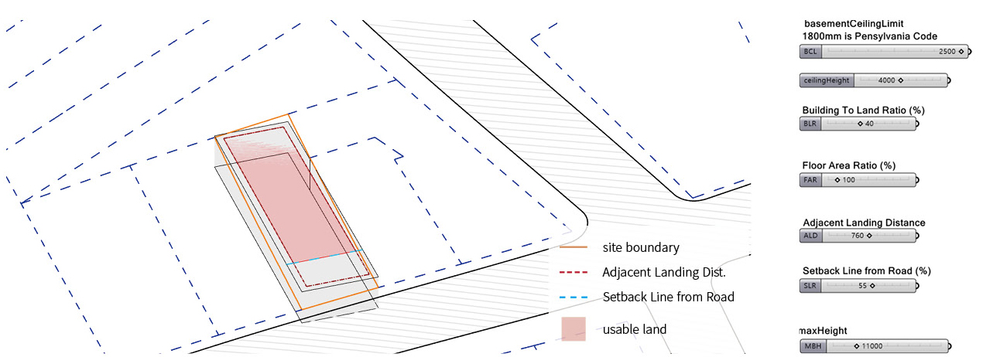

Massigner is a kind of a prototype of Grasshopper Plug-in, searching an optimized volume responding to given context. The result of this software is a mass within the boundary. But this mass cannot be the result of the design. It is a starting point of design. The mass produced by the building codes and void options are available to suggest a designer which volume is proper, economical, and efficient. However, architectural projects are enough complex to consider various values and contexts. In extreme cases, this program just provides variations and decreases repetitive process. Also, it is based on conventional frames of design process which will not be changed vastly. Thus, users need to translate the result into the real spaces. Instead of using it as a direct result-making tool, using it as exploring tool to free the consciousness of concept design would be better. Through the massive amount of variations, designers can broaden their design preceptions.
This version is GA (Genetic Algorithm) version. If you want to explore Tree Search version, click the link here.

Building codes analysis. Massigner can provide intuitive analysis of the building codes and zoning low to architects based on parametric and parameterized forms. Notion of parametric and parameterized building codes is important, since the codes are different in each region and province. In design practice, architects conduct a 'scale review' to see the limitations and possibilities of a given land before designing it. This process is more than just a geometric interpretation of laws. It is an important process that recognizes the extent to which the environment and context will be considered, and what differences and directions exist in the contexts of the context and the environment. Massigner has made this process more immediate and intuitive. Rather than looking at the law books and drawing them by hand, user can manipulate the parameterized codes to understand the scale of context and the building. It can serve as a tool to define the scale through parameter adjustments.
Genetic Algorithm (GA). Representation: One box can be represented by a gene containing seven values (DNA). The first six digits represent the x, y, and z values of one corner point and the length, width, and height values. The final one is a value that determines whether the box is present or not. If this value is 0, the box is not represented. If this value is 1, the box is displayed. This one gene is represented as a list. Multiple boxes can be represented as a single list. Fitness: The area of the void can be determined by the intersection of the generated box and the bulk mass. The BLR and FAR for each gene can be obtained by calculating the ratio to the given floor area. By calculating the distance from the optimization peak point, you can create an objective that contains two fitness points. The shortest distance will be the best for each generation, and the remaining genes are transferred to the next generation.
Inspiration Tool. Inspiration tool works based on GA. While GA is running, Inspiration tool record a volume resulting from each generation of the GA, if this volume is distinguishable from previous one. There is a value to compare the best fitness and other gene's fitness in average. If this value is smaller than specific value (i.e. 0.05), then two genes are similar. This value also can be applied to distinguish the volumes. But there are still drawbacks. Since the comparison target is the previous volume, it can not be compared with the more previous volume. Therefore, the volumes that were previously listed may be re-recorded. Another disadvantage is that if GA is turned on with this feature, operation will be slower as the data is accumulated. In fact, it creates a volume with boolean operation and shows the line, so it is noticeably slow when the data continues to accumulate.
Interior. Since the outline of floor is a random shape, getting x and y coordinates from the all segment points of the outline is the first step. Using the coordinates, create lines for dividing the plan. If the distance between the coordinates is longer than specific value, more lines could be added. After trimming and cleaning up the lines, massigner will randomly select the partition wall lines. Each partition wall can have door left or right of the wall. If partition walls lines are intersected, they will have at least two doors. The positions of windows can be set on the outlines. If outline segments is shorter than a value, they cannot have windows. If they are in the specific range they can have multiple small windows. If they are longer than the range, they will have a large window.
GA version shows more efficient computing performance to explore proper volumes. The key notion of the mass finding using GA is the representation. Instead of using the geometry itself, using abstracted and compressed representation of boxes can decrease the computing load.
The importance of representation plays a major role in the progression from simple architectural automation to artificial intelligence-based architectural design.